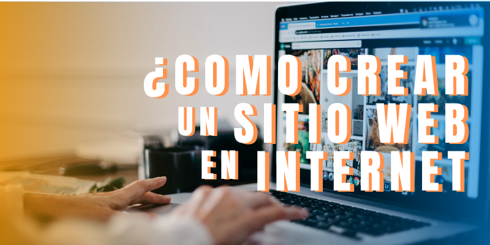

¿COMO CREAR UN SITIO WEB EN INTERNET?
Crear un sitio web en Internet es esencial para tener presencia en línea, generar credibilidad y alcanzar una audiencia global. Te permite controlar tu marca y facilitar estrategias de marketing digital, lo que puede aumentar el tráfico y las conversiones.
Pasos para crear un sitio web
Definir el propósito del sitio
Decide si será un blog, una tienda en línea, un portafolio, etc.
Elegir un nombre de dominio
Registra un dominio que refleje el contenido del sitio (p. ej., www.tusitio.com) usando registradores como GoDaddy o Namecheap.
Seleccionar un servicio de hosting
Elige un proveedor de hosting (como Bluehost, SiteGround o HostGator) que se adapte a tus necesidades. Compara planes según el tráfico esperado y el tipo de contenido.
Instalar un CMS (opcional)
Para facilitar la gestión del contenido, considera usar un CMS como WordPress. La mayoría de los servicios de hosting ofrecen instalación con un solo clic.
Elegir un tema o plantilla
Si usas un CMS, selecciona un tema que se ajuste a tu estilo y propósito. Asegúrate de que sea responsive (adaptable a móviles).
Agregar contenido
Inicio: Breve introducción y enlaces a otras secciones.
Sobre mí/empresa: Información sobre ti o tu negocio.
Servicios/Productos: Detalles de lo que ofreces.
Contacto: Formulario o información de contacto.
Personalizar el diseño
Modifica colores, fuentes y disposición para reflejar tu marca. Usa herramientas de personalización que ofrezca el CMS o el constructor de sitios.
Configurar SEO básico
Instala un plugin de SEO (como Yoast SEO en WordPress) y optimiza títulos, descripciones y palabras clave.
Agregar funcionalidades adicionales
Si es necesario, incluye formularios de suscripción, enlaces a redes sociales, y funciones de e-commerce (como WooCommerce para WordPress).
Probar el sitio
Asegúrate de que todo funcione correctamente en diferentes dispositivos y navegadores. Revisa enlaces, formularios y la velocidad de carga.

Publicar el sitio
Una vez que estés satisfecho, publica el sitio y anúncialo en redes sociales y otros canales.

Monitorear y actualizar
Usa herramientas como Google Analytics para monitorear el tráfico y realizar actualizaciones periódicas de contenido y seguridad.
Como crear una pagina en WordPress